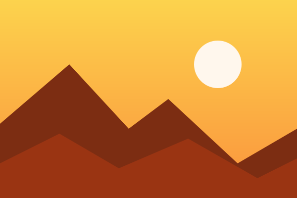
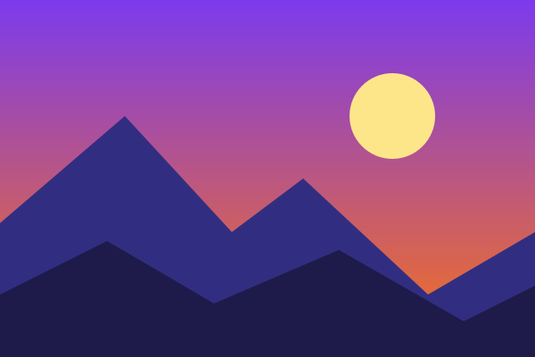
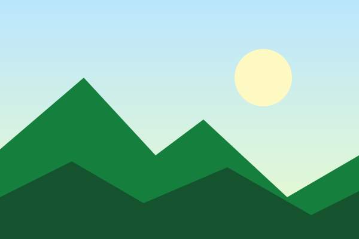
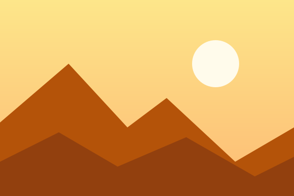

Primeros rayos sobre las cumbres.

El cielo cambia de color al caer el sol.
Una noche tranquila entre colinas.

Verdes profundos bajo un cielo claro.

Calor y luz en el desierto.
Montañas que bajan hasta el mar.